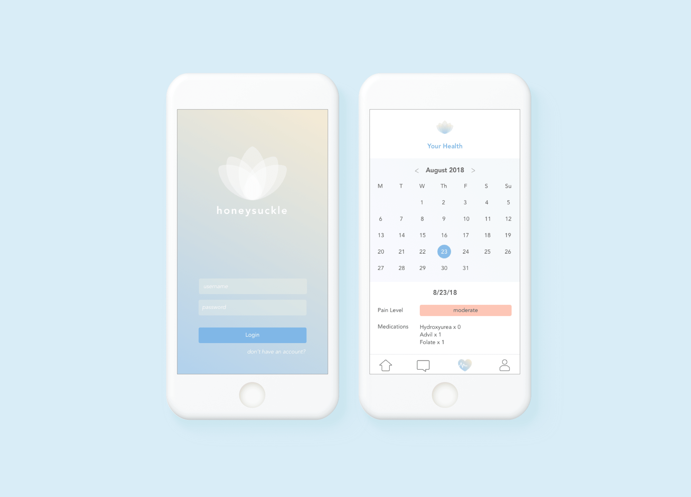

03 Honeysuckle App Prototype

I worked with a team to create a technological solution for patients suffering from sickle cell anemia. We decided we should create an application that offers patients a community, reliable and quick access to information and convenient contact with health-care professionals. We called our finished product Honeysuckle. Below, I will talk about the brand design, presentation design and UI/UX for the prototype application that we made.
Understanding our Users
While we did not have the resources to conduct proper user interviews/testing, we read articles and analyzed data collected by OHG (and other online sources) and came up with the following key points:
- Sickle cell patients express that it’s hard to find the right doctors.
- A majority of health care professionals express that they don’t have a firm grasp of sickle cell anemia and are unsure of how to treat patients perfectly.
- Over half of sickle cell patients make $40k or less annually; many patients might be unable to afford frequent hospital visits.
- Common medications that sickle cell patients take are Hydroxyurea, Advil and Folate.